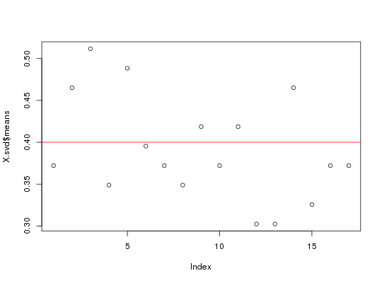
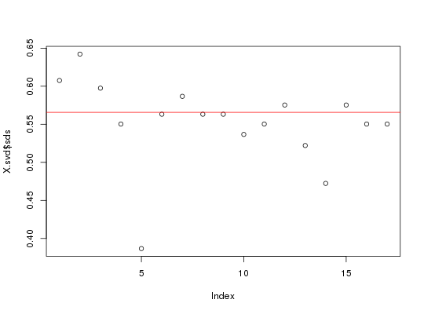

Binomial(2, p) scaling
snp_scaleBinom(X, ind.train = seq(nrow(X)))
A named list of two vectors mean and sd
which are as long as the number of columns of X.
You will probably not use this function as is
but as the fun.scaling parameter of other functions
of package bigstatsr.
This scaling is widely used for SNP arrays. Patterson N, Price AL, Reich D (2006) Population Structure and Eigenanalysis. PLoS Genet 2(12): e190. http://dx.doi.org/10.1371/journal.pgen.0020190.
set.seed(1) a <- matrix(0, 43, 17) p <- 0.2 a[] <- rbinom(length(a), 2, p) X <- as.big.matrix(a, type = "char", shared = FALSE)#> Warning: Assignment will down cast from double to char #> Hint: To remove this warning type: options(bigmemory.typecast.warning=FALSE)X.svd <- bigstatsr::big_SVD(X, fun.scaling = snp_scaleBinom)#> (1)str(X.svd)#> List of 5 #> $ d : num [1:17] 10.01 8.95 8.88 8.22 7.42 ... #> $ u : num [1:43, 1:17] 0.0642 -0.141 -0.2824 -0.2299 0.1668 ... #> $ v : num [1:17, 1:17] -0.0426 -0.0746 0.2551 -0.1335 -0.0438 ... #> $ means: num [1:17] 0.465 0.395 0.419 0.302 0.465 ... #> $ sds : num [1:17] 0.597 0.563 0.575 0.507 0.597 ...plot(X.svd$means)abline(h = 2 * p, col = "red")plot(X.svd$sds)abline(h = sqrt(2 * p * (1 - p)), col = "red")